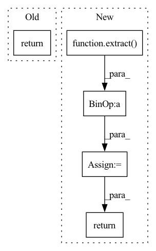

Pattern ID :28636

Before Change
def q_sample(self, x_start, t, noise=None):
noise = default(noise, lambda: torch.randn_like(x_start))
return (
extract(self.sqrt_alphas_cumprod, t, x_start.shape) * x_start +
extract(self.sqrt_one_minus_alphas_cumprod, t, x_start.shape) * noise
), None
After Change
extract(self.sqrt_one_minus_alphas_cumprod, t, x_start.shape) * noise
)
alphas_cumprod = extract(self.alphas_cumprod, t, t.shape)
log_snr = -log(1. / alphas_cumprod - 1)
return noised, log_snr
def predict_start_from_noise(self, x_t, t, noise):
return (
In pattern: SUPERPATTERN
Frequency: 3
Non-data size: 5
Instances
Fragment ID: 84537817
Project Name: lucidrains/imagen-pytorch
Commit Name: 110855e11109c12c4c458d42d65399e872e7d0d3
Time: 2022-06-14
Author: lucidrains@gmail.com
File Name: imagen_pytorch/imagen_pytorch.py
M Class Name: GaussianDiffusion
N Class Name: GaussianDiffusion
M Method Name: q_sample(4)
N Method Name: q_sample(4)
M Parent Class: nn.Module
N Parent Class: nn.Module
M File Name: imagen_pytorch/imagen_pytorch.py
N File Name: imagen_pytorch/imagen_pytorch.py
M Start Line: 228
M End Line: 231
N Start Line: 233
N End Line: 241
'>
Before Change
model_output = self.denoise_fn(x, t)
model_output, model_log_variance = model_output.chunk(2, dim = 1)
model_variance = model_log_variance.exp()
return model_output, model_variance, model_log_variance
def p_losses(self, x_start, t, noise = None, clip_denoised = False):
noise = default(noise, lambda: torch.randn_like(x_start))
After Change
model_output = default(model_output, lambda: self.denoise_fn(x, t))
pred_noise, var_interp_frac_unnormalized = model_output.chunk(2, dim = 1)
min_log = extract(self.posterior_log_variance_clipped, t, x.shape)
max_log = extract(torch.log(self.betas), t, x.shape)
var_interp_frac = unnormalize_to_zero_to_one(var_interp_frac_unnormalized)
model_log_variance = var_interp_frac * max_log + (1 - var_interp_frac) * min_log
model_variance = model_log_variance.exp()
x_start = self.predict_start_from_noise(x, t, pred_noise)
model_mean, _, _ = self.q_posterior(x_start, x, t)
return model_mean, model_variance, model_log_variance
def p_losses(self, x_start, t, noise = None, clip_denoised = False):
noise = default(noise, lambda: torch.randn_like(x_start))
'>
Fragment ID: 84537819
Project Name: lucidrains/denoising-diffusion-pytorch
Commit Name: 62e84903854715c4dac54c49a6f61ff47c9e4c47
Time: 2022-05-12
Author: lucidrains@gmail.com
File Name: denoising_diffusion_pytorch/learned_gaussian_diffusion.py
M Class Name: LearnedGaussianDiffusion
N Class Name: LearnedGaussianDiffusion
M Method Name: p_mean_variance(1)
N Method Name: p_mean_variance(1)
M Parent Class: GaussianDiffusion
N Parent Class: GaussianDiffusion
M File Name: denoising_diffusion_pytorch/learned_gaussian_diffusion.py
N File Name: denoising_diffusion_pytorch/learned_gaussian_diffusion.py
M Start Line: 93
M End Line: 96
N Start Line: 99
N End Line: 112
'>
Before Change
raise ValueError(f"unknown objective {self.objective}")
loss = self.loss_fn(model_out, target)
return loss
def forward(self, img, *args, **kwargs):
b, c, h, w, device, img_size, = *img.shape, img.device, self.image_size
After Change
loss = self.loss_fn(model_out, target, reduction = "none")
loss = reduce(loss, "b ... -> b (...)", "mean")
loss = loss * extract(self.p2_loss_weight, t, loss.shape)
return loss.mean()
def forward(self, img, *args, **kwargs):
b, c, h, w, device, img_size, = *img.shape, img.device, self.image_size
'>
Fragment ID: 84537820
Project Name: lucidrains/denoising-diffusion-pytorch
Commit Name: 8b30be80429a1b8e254074e500df8f0df87db0f6
Time: 2022-06-14
Author: lucidrains@gmail.com
File Name: denoising_diffusion_pytorch/denoising_diffusion_pytorch.py
M Class Name: GaussianDiffusion
N Class Name: GaussianDiffusion
M Method Name: p_losses(4)
N Method Name: p_losses(4)
M Parent Class: nn.Module
N Parent Class: nn.Module
M File Name: denoising_diffusion_pytorch/denoising_diffusion_pytorch.py
N File Name: denoising_diffusion_pytorch/denoising_diffusion_pytorch.py
M Start Line: 531
M End Line: 532
N Start Line: 537
N End Line: 541